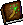

Arcane Magic
Arcane Magic: illusions, summons and the old Wizardry, Sorcery and Wrath spells.
Covers the original skills: Wizardry, Sorcery, Wrath.
Level guide
| Level | Unlock | |
|---|---|---|
| 1 | Cast Inxition | |
| 1 | Cast Radar | |
| 1 | Casting Dispel Illusions trains this skill | |
| 1 | Casting Illusionary Spikes trains this skill | |
| 1 | Casting Magic Shield trains this skill | |
| 1 | Casting Meteor trains this skill | |
| 1 | Casting Morph trains this skill | |
| 1 | Casting Radar trains this skill | |
| 1 | Casting Summon Creature trains this skill | |
| 1 | Casting Web trains this skill | |
| 10 | Cast Morph | |
| 11 | +1 power for this school's spells | |
| 15 |  | Cast Illusionary Spikes |
| 20 | Cast Dispel Illusions | |
| 21 | +1 power for this school's spells | |
| 25 | Cast Magic Shield | |
| 30 | Cast Summon Creature | |
| 31 | +1 power for this school's spells | |
| 35 | Cast Web | |
| 40 | Cast Meteor | |
| 50 | Cast Bolt | |
| 50 | Wear Robe of Invisibility | |
| 51 | +1 power for this school's spells | |
| 60 | Cast Portal | |
| 71 | +1 power for this school's spells | |
| 81 | +1 power for this school's spells | |
| 91 | +1 power for this school's spells | |
| 98 | +1 power for this school's spells |